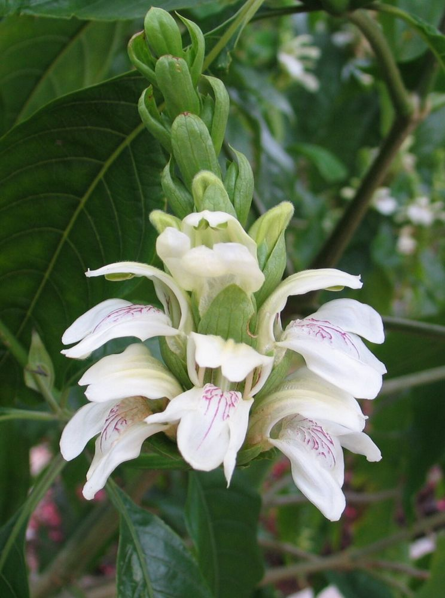

🌿 ஆடாதோடை – உங்களுக்குத் தெரியுமா?
1ஆடு தொடாத இலை
இலையின் கசப்பு காரணமாக ஆடுகள் கூட இதைத் தொடுவதில்லை. அதனால்தான் "ஆடு தொடா இலை" – ஆடாதோடை என்று பெயர்.
2நவீன இருமல் மருந்தின் மூலம்
இன்று பயன்படும் “Bromhexine” என்ற இருமல் மருந்து, ஆடாதோடையில் உள்ள "வாசிசின்" என்ற வேதிப்பொருளிலிருந்து உருவாக்கப்பட்டது.
3இயற்கை வேலி
கால்நடைகள் மேயாததால், வயல் ஓரங்களில் உயிர்வேலியாக வளர்க்கப்படுகிறது. இதன் இலைகள் சிறந்த பசுந்தாள் உரமும் கூட.
🌿 சித்த மருத்துவக் குறிப்பு:
2–3 ஆடாதோடை இலைகளுடன் சிறிது மிளகு சேர்த்துக் கஷாயம் செய்து, தேன் கலந்து அருந்தினால் இருமல், சளி குறையும் என்பது சித்தர் மரபு. (கர்ப்பிணிகள் இதைத் தவிர்க்க வேண்டும்.)
இந்தத் தகவல் பயனுள்ளதாக இருந்ததா?